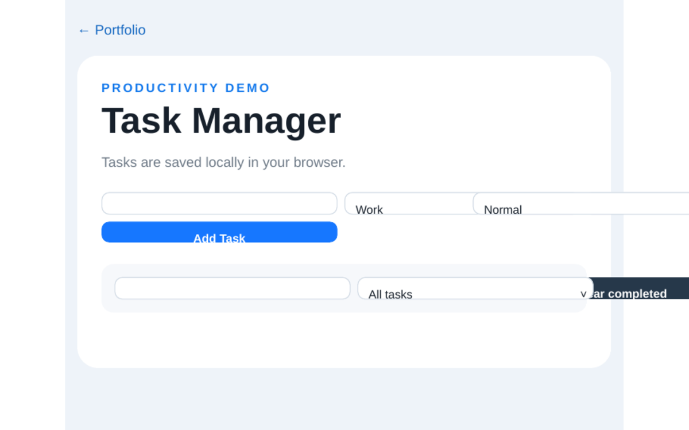

The problem
Online password generators often route generated values through a server, log them, or use weak Math.random(). Users have no way to verify what happens to a password after generation.
A single-page utility that generates cryptographically secure passwords in the browser. Nothing leaves the device — no server, no logging, no telemetry.

Online password generators often route generated values through a server, log them, or use weak Math.random(). Users have no way to verify what happens to a password after generation.
A single static HTML page with three files — no build step, no dependencies. Randomness comes from crypto.getRandomValues(), the browser's own CSPRNG.
I chose vanilla JavaScript over a framework because the whole app fits in ~150 lines. A framework would have added megabytes of dependencies to solve a problem that doesn't need them.
Full implementation: UI, logic, randomness source, strength calculation, clipboard interaction, responsive layout and accessibility attributes.
Client-side security tools are a good exercise in restraint — every extra dependency is a potential attack surface. This project reinforced the value of using platform APIs instead of reaching for a library.